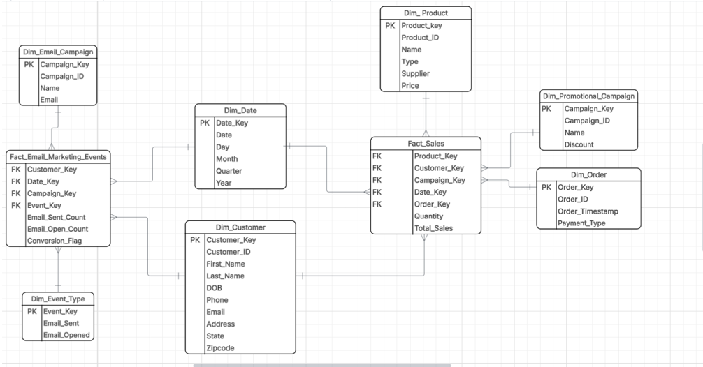
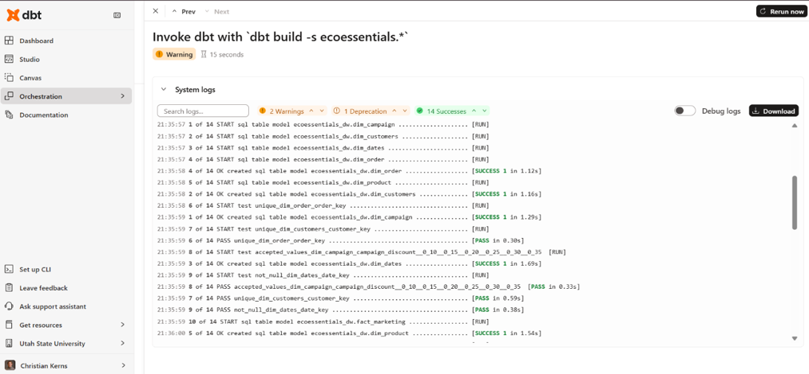
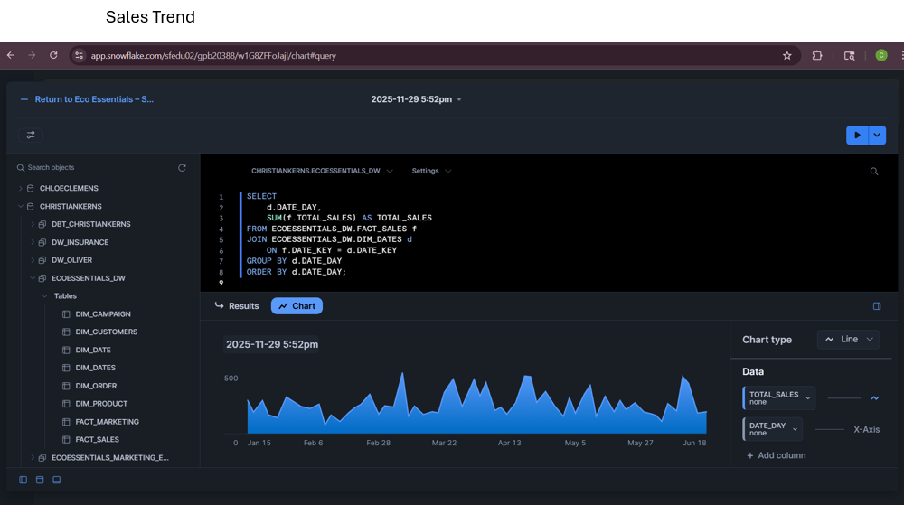

Featured Project: Eco Essentials Data Warehousing
Tech Stack: Fivetran, Snowflake, dbt, SQL, LucidChart
The objective of this project was to design and build an Enterprise Data Warehouse that allows analysts to seamlessly correlate marketing activity (such as email opens or clicks) with subsequent purchases in the sales system.
1. Data Modeling & Architecture
I drafted a bus matrix to outline key business processes (Sales and Marketing Email Conversions) and designed a star
schema. By identifying conformed dimensions (dim_customer and dim_date), I successfully
combined the separate schemas into a single enterprise data warehouse.

2. Extract, Load, and Transform (ELT)
I utilized Fivetran to sync data from external sources (Amazon RDS for PostgreSQL and Amazon S3) into Snowflake. From there, I leveraged dbt to define the source data and transform the raw tables into clean dimension and fact tables, running automated tests to ensure data integrity.

3. Business Outcomes & Visualization
With the data warehouse populated in Snowflake, I wrote complex SQL queries to answer critical business questions and generate visual dashboards. These visualizations tracked sales trends over time, email funnel engagement, and overall campaign performance to determine which promotions generated the highest revenue.
